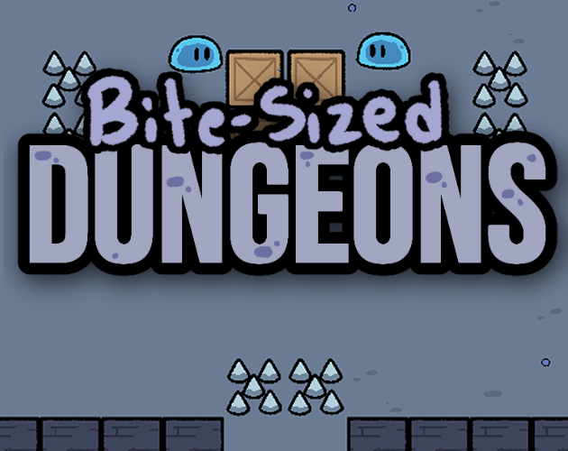
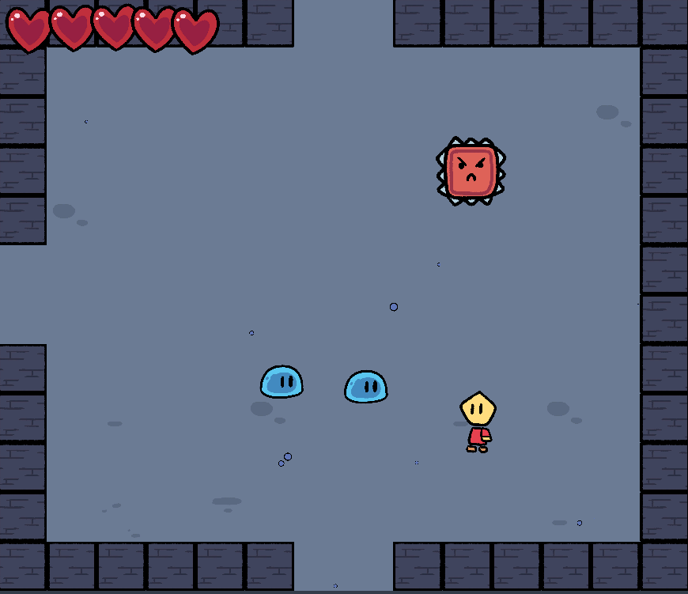
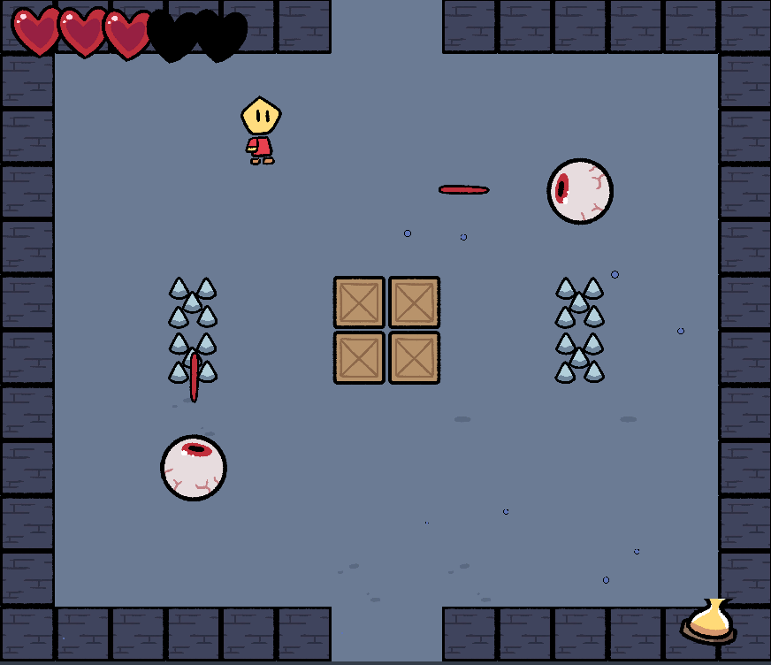

Nov 2022
Welcome to Bite-Sized Dungeons! Escape a dungeon by recovering your lost equipment!
The dungeon layouts are completely procedurally generated, so you get a new dungeon every time you play!
Made for Games Den Quicker 2022!

Unity
Clip Studio Paint
Details
For Bite-Sized Dungeons, I really wanted to try implementing a form of PCG (procedurally generated content) into my game jam game.
I decided to go with a dungeon crawler, in which the player can collect upgrades that allows them to access more rooms. In generating
the dungeon layouts, I needed to make sure that the all layouts are completeable and that all upgrades were necessary to be collected.
While the layout of the dungeon is completely procedurally generated, the contents of each room will depend on the type of room it is, and a layout is selected from a handful of variants.
While the layout of the dungeon is completely procedurally generated, the contents of each room will depend on the type of room it is, and a layout is selected from a handful of variants.

